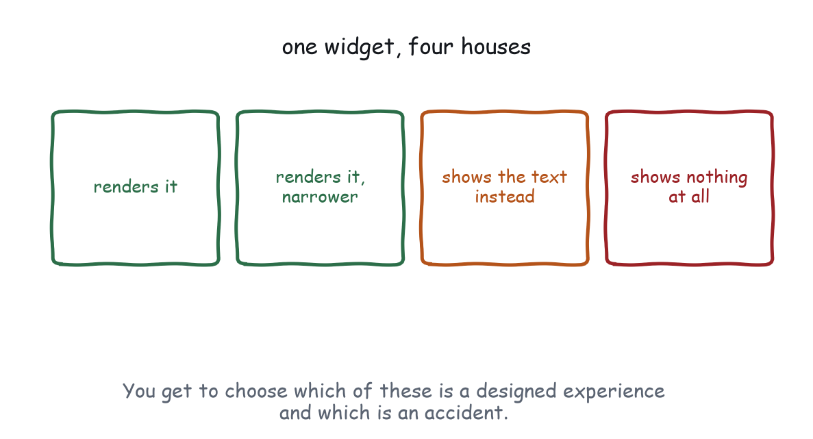
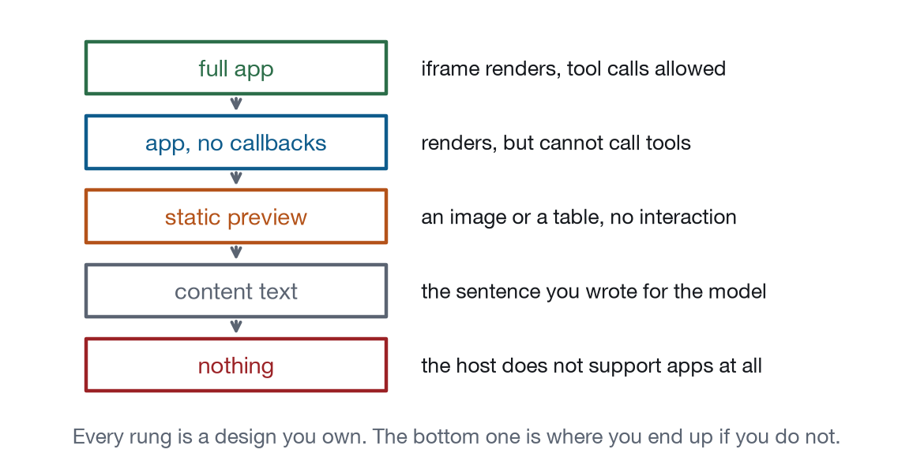
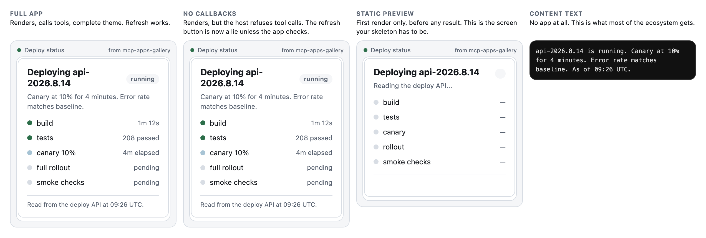

Chapter 12
Hosts Are the New Browsers
The compatibility reality, and a fallback ladder you design rather than suffer.
Anyone who built for the web between about 1998 and 2010 will recognise this situation immediately. You write one thing. It runs in several environments that agree on the broad strokes and disagree on the details. Some environments do not support the feature at all. The list changes quarterly, and there is a table on a website somewhere that is usually a bit out of date.

The good news, and it is genuinely good, is that this is a much better version of that era. MCP Apps is a written specification with a conformance story, hosts declare their capabilities in a machine-readable way, and the extension negotiates, so nobody is writing user-agent string parsers. The rest of the news is that eleven clients render apps today, they were built by eleven teams, and your widget will look and behave slightly differently in each of them.
What actually varies
Appendix B has the generated table. What follows is the shape of the variation, which matters considerably more than any snapshot of it.
Whether apps render at all is the largest difference, and it is binary: a client either declares io.modelcontextprotocol/ui or it does not. Claude Code, which many readers use every day, does not, because it is a terminal and there is no iframe to render into. Your app runs there. It just runs as text.
Beyond that, viewport widths differ, and so does what happens when your content is taller than the host wants to give you, since some hosts clip and scroll, some collapse with an expand affordance, and some simply grant the height. Themes differ, because every host supplies its own and some supply a full token set while others supply light or dark and nothing else, so design such that missing tokens degrade to something readable and never to something invisible. Which app-initiated calls are allowed differs, because hosts may restrict which tools an app can call and may disable capabilities like opening links. Consent policy differs, because whether a tool call from inside an app prompts, prompts once, or never prompts is the host’s decision and the user’s setting, and your design cannot assume any of the three. And freshness differs, because hosts ship on their own schedule and your app will be running in a version that was current eight months ago, in an enterprise that pinned it.
Degrade deliberately
Here is the chapter’s actual argument. Every one of those differences produces a degraded experience somewhere, so the question is not whether your app degrades. It is whether the degraded version is a thing you designed or a thing that happened to you.

Figure 12-1 is those rungs, for real, on one widget. The gallery’s mini host can be told to support less than it does, which is the only honest way to produce that picture, and building it found two bugs in this book’s own tracker: it had no skeleton, so the static preview rung was blank, and it never checked toolCalls, so its refresh button would have failed silently in the second column. Both are fixed in the figure you are looking at, and both are exactly the failures this section is about.

There are five rungs and you own all five. Full app, where the iframe renders, tool calls are allowed, and the theme is complete, so everything works. App, no callbacks, where it renders but the host will not let it call tools, which means anything interactive is decoration now, and the question is whether your app knows that; it can, by checking the capabilities returned from ui/initialize and hiding or disabling the controls it cannot honour, because a button that silently does nothing is worse than no button. Static preview, where some hosts substitute a thumbnail or a snapshot for a live frame in a list view or a mobile summary, which raises the question of what your app looks like frozen at first render with no data, which is Chapter 3’s skeleton question arriving from a different direction. Content text, where there is no app at all: the tool ran, the text came back, the model read it and answered. And nothing, where the tool is not called or the server is not connected, which is outside your control and where the only thing you can do is not be the reason.
The rung that decides how good your product feels is the fourth one, and it gets the least attention, because it has no pixels to review.
Checking capabilities, in three lines
The rung you land on is knowable at runtime, and almost nobody checks.
Illustrative, not from the gallery
app.connect().then(function (host) {
var can = host.capabilities || {};
if (!can.toolCalls) {
// Nothing this app can do will reach the server. Say so, once, quietly,
// and stop rendering controls that would lie about it.
document.body.classList.add("read-only");
}
if (!can.openLink) escapeHatch.remove();
});Three consequences are worth designing rather than discovering. With no toolCalls your app is a viewer, so hide the actions, keep the information, and make sure the content text carried the answer. With no openLink your escape hatches are inert, so remove them; a button that does nothing is worse than an absent one. And with a partial theme, tokens you expected are missing, so every colour you use needs a fallback in your own stylesheet and a host supplying two variables instead of twelve produces a plain widget and never an invisible one. The pattern generalises: treat every capability as absent until the handshake says otherwise. It costs one branch and removes a whole category of “works on my host”.
The text rung is a product
Say it plainly. For a large fraction of your users, your content string is your app. That reframes the work: it is not a fallback you write in ten seconds so the schema validates, it is the version of your product that runs everywhere, and it deserves as much care as the card.
The gallery’s probe measures this, because it is measurable.
Captured output from node gallery/probe/probe.js
$ node gallery/probe/probe.js http://localhost:8931/mcp
io.modelcontextprotocol/ui declared
tools 22 (17 carry a ui:// resource)
8/17 apps return a text answer good enough for a host that does not
render apps.Eight out of seventeen, and the nine that fail are exactly the book’s deliberately over-built “before” exhibits, which is not a coincidence. The same instinct that produces a kitchen-sink widget produces a content string reading “Loan analytics suite opened.”
Three tests tell you whether a text rung carries its weight. Does it contain the answer itself, and not a description of where the answer is? Could the model act on it three turns later, which means names, numbers, and identifiers? And does it say what the human can do next, the way “the user can change the horizon in the app” tells the model what to offer if the app never rendered?
Writing the string
Since the text rung is a product, it deserves a paragraph on how to write it, because “put the answer in it” turns out to be harder advice to follow than it sounds.
Lead with the verdict, in the same order as the card, because the model reads linearly and so does a person in a terminal. degraded: checkout is slow, nothing is down puts the answer in the first four words, exactly as the pill and the headline do in the pixels. Then the reason, then the numbers, then the timestamp. If the sentence order matches the visual hierarchy, you have written the alt text for your own layout without meaning to, and the two will stay in sync because they came from the same decision.
Name things the way the user named them. If they asked about “checkout” then the word in your string is checkout, not svc-chk-prod-01, because the model is going to quote you and the user is going to read the quote. Internal identifiers belong in structuredContent where they are useful and invisible.
Include what the human can do next, phrased as a capability rather than an instruction. The user can change the horizon in the app tells the model something it can offer. Click the slider to adjust tells it about a thing it cannot see, in a host where the slider does not exist.
And write it as a sentence, not as a serialisation. {"state":"degraded", "errorRate":4.1} in a text field is a JSON object that has been demoted to a string: it is harder to read, harder to quote, and no easier to parse than the structuredContent sitting next to it. If you find yourself stringifying, the thing you want is the other field.
The test is the one from the top of this chapter, applied literally. Delete your widget from your imagination. Read only the string. Can you answer the user’s question, and do you know what to offer next? If not, four fifths of the ecosystem just got a worse product than the one you thought you shipped.
A worked degradation
One widget, four houses, same tool call. This is the gallery’s service status card, and it is the shortest way to see that the ladder is a design rather than a fallback.
In a host that renders apps you get the card: pill, headline, sentence, three numbers, a disclosure holding the per-service table, and half a second to the answer. In a host that renders but blocks tool calls you get exactly the same thing, because this widget has no actions, which is not luck: a dashboard should not have actions, and this archetype earning nothing from toolCalls is the archetype behaving correctly. A tracker in the same position loses its refresh button and has to say so. In a host showing a static preview you get the first render, frozen, with no data, which is why the skeleton draws the title and the shape instead of a spinner. And in Claude Code, which is a terminal, you get the text.
Captured output from tools/call service_status
degraded: Checkout is slow, nothing is down. One dependency is timing out
on 4% of calls. Everything else is nominal. error rate 4.1%, p99 latency
2.4s, requests/min 18.2k, as of 09:41 UTC.Every level of the Chapter 3 hierarchy is in there, in order: verdict, reason, numbers, timestamp. A user in a terminal gets the same answer in the same sequence, and the model can act on it without any of the pixels. That is what a designed fourth rung looks like. The before version of this widget returns “Ops overview opened.”, which is the same tool, the same data, and nothing at all for four fifths of the ecosystem.
Version skew, which is the quiet one
Compatibility differences you can see are the easy half. The dangerous half is the same host, an older build: somebody running a client from eight months ago because their enterprise pinned it, speaking an earlier protocol revision, supporting fewer capabilities, and knowing nothing about the field you added last month. Your server is current. Nothing errors. Things just quietly do less.
Three habits, and the first one is free. Never require a field you added recently, because additions are safe while new required fields are a breaking change whatever the version number says. Handle an older negotiated revision by answering in it, the way the gallery accepts whatever version the client offers and answers with one that client can speak, which is nine lines and the difference between a server that works for everybody and a server that is correct and unusable. And assume unknown capabilities are absent, which is the rule above, pointed at the future.
Working out that this mattered took one command. claude mcp list reported tools fetch failed, because a client negotiating 2026-07-28 requires resultType on list results and the server was not sending it. Three fixes later it connected. None of the three had anything to do with MCP Apps, and all three are recorded in gallery/VERIFICATION.md, because a reader building on this book will hit exactly the same wall on their first afternoon.
The other SDK in the room
ChatGPT shipped an Apps SDK before this extension was final, and it informed the design, with the result that ChatGPT renders MCP Apps and also has its own predecessor with its own conventions.
If you are targeting both, the differences you will meet are in the names rather than the ideas: how the UI resource is attached, what the app-to-host methods are called, and which host capabilities exist. Everything this book argues about survives the translation, because none of it is about method names. The laws are about what to render and what to write back, and both SDKs give you somewhere to put both. Check the current shape in the ext-apps specification and in OpenAI’s own documentation before you write an adapter, because any table printed here would be wrong by the time you read it, which is the same reason Appendix B is generated.
Testing across hosts without owning eleven of them
You will not install all of them; nobody does. The practical ladder starts with testing the two extremes, one host that renders apps and one that does not, because between them they cover the failure modes that matter, and Claude and Claude Code are a workable pair that most readers already have. Then test with capabilities removed, which your own mini host can do by lying about what it supports: the gallery’s returns a capabilities object from ui/initialize, so change it, reload, and watch your app find out it cannot call tools. Doing that once will find a bug. Then test the narrow viewport at 380 and again at 320, and both themes, including switching while the app is on screen.
And do not write a compatibility table by hand. It rots silently, which is worse than being absent, because people trust it. Appendix B is generated from a JSON file that carries its source and the date it was checked, so a reader can see how stale it is at a glance.
What to do about the host you cannot test
Somebody will report that your widget is broken in a client you have never opened, and here is the triage that works without installing it. Ask which rung: did the widget render at all, because if not it is a capability question and the answer is your text rung, while if it rendered and nothing works it is toolCalls, and if it rendered and looks wrong it is theme or viewport. Ask for the text, meaning whatever the host showed instead or alongside, which tells you what your content string looks like in the wild and is worth knowing regardless of the bug. Reproduce by subtraction, taking your own mini host and removing the capability you suspect, which finds the bug faster than installing the client would and leaves you with a regression test. And fix at the rung, never at the host, because a conditional keyed on host name is a user-agent string with extra steps, and the web spent a decade proving where that leads; handling the absent capability fixes it for every other client that also lacks it, including the ones that do not exist yet.
The part that will change
Some honesty about the shelf life of this chapter. The current situation is early. Capabilities will converge, hosts will support more, and some of the differences described here will be gone in a year, which is why the matrix in Appendix B will be wrong before this book is old and exactly why it is generated and dated.
What will not change is the structure. There will always be a host that does not render, a version that is behind, and a user whose settings are stricter than you expected. The fallback ladder is not a workaround for an immature ecosystem. It is the permanent shape of building for somebody else’s client, and the web spent twenty years learning that the graceful version is cheaper than the alternative.
What to remember
Eleven clients render apps and they differ in viewport, theme, capabilities, and consent policy. Your app degrades, and your only choice is whether the degraded version is designed. Five rungs, and the fourth one, plain text, is the one most of your users get. Test two hosts rather than eleven, lie to your own app about capabilities to see what breaks, and generate your compatibility table so its staleness is visible.
Next: the last chapter, about how anybody finds your app in the first place.